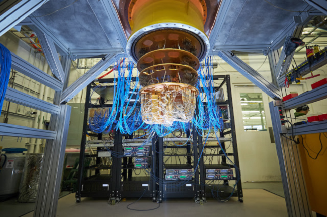

Date de publication : 25 août 2023
Pour lire l'article complet, cliquez sur le lien suivant : Les États-Unis publient des standards de crypto post-quantiques
L'Institut national des normes et de la technologie américain (NIST) a publié des projets de normes de cryptographie post-quantique (PQC) pour protéger les entreprises contre les cyberattaques quantiques futures. Les normes incluent quatre algorithmes de chiffrement : CRYSTALS-KYBER pour l'encapsulation de clé publique, et CRYSTAL-Dilithium, FALCON, et SPHINCS+ pour les signatures numériques. Ce cadre vise à préparer les systèmes de sécurité pour l'ère des ordinateurs quantiques, capables de menacer les algorithmes cryptographiques actuels. Les commentaires sur les projets de normes doivent être soumis d'ici le 22 novembre 2023. La préparation contre les attaques quantiques devient une priorité mondiale, comme en témoigne également le plan d'action de l'UE et la loi américaine Quantum Computing Cybersecurity Preparedness Act.
